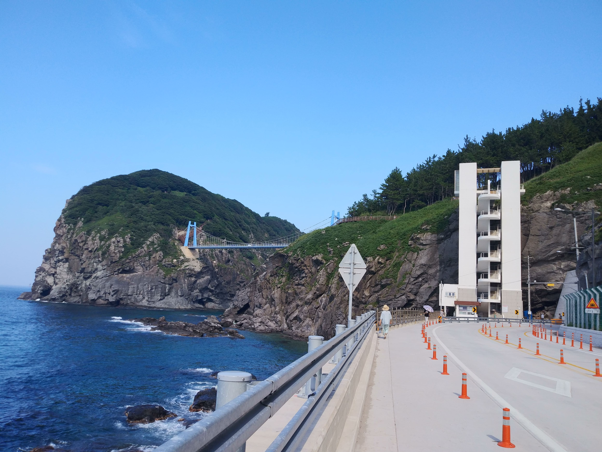
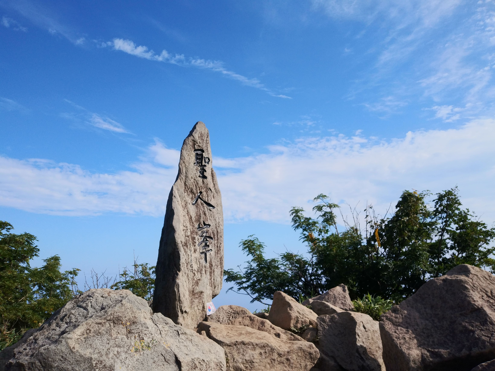
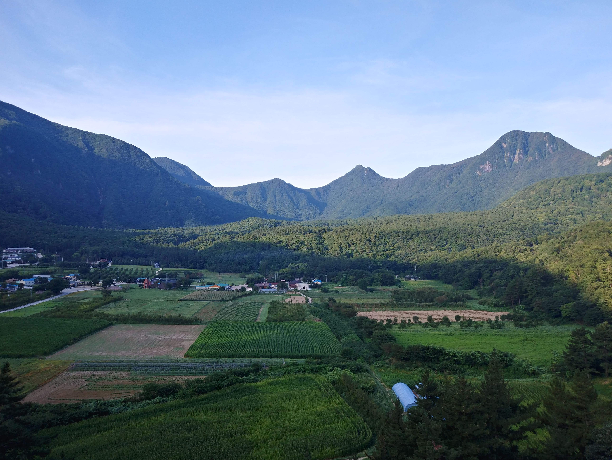
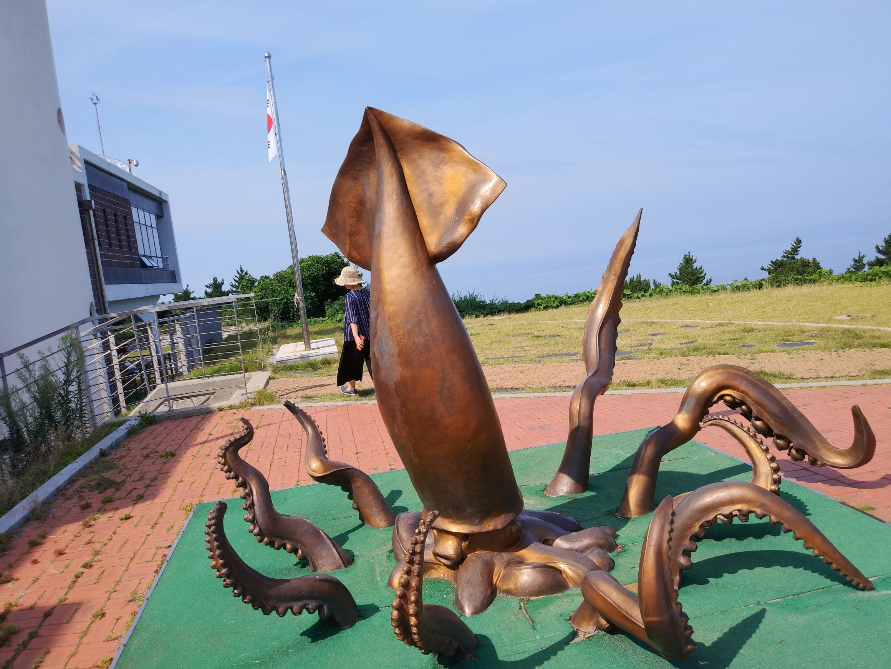
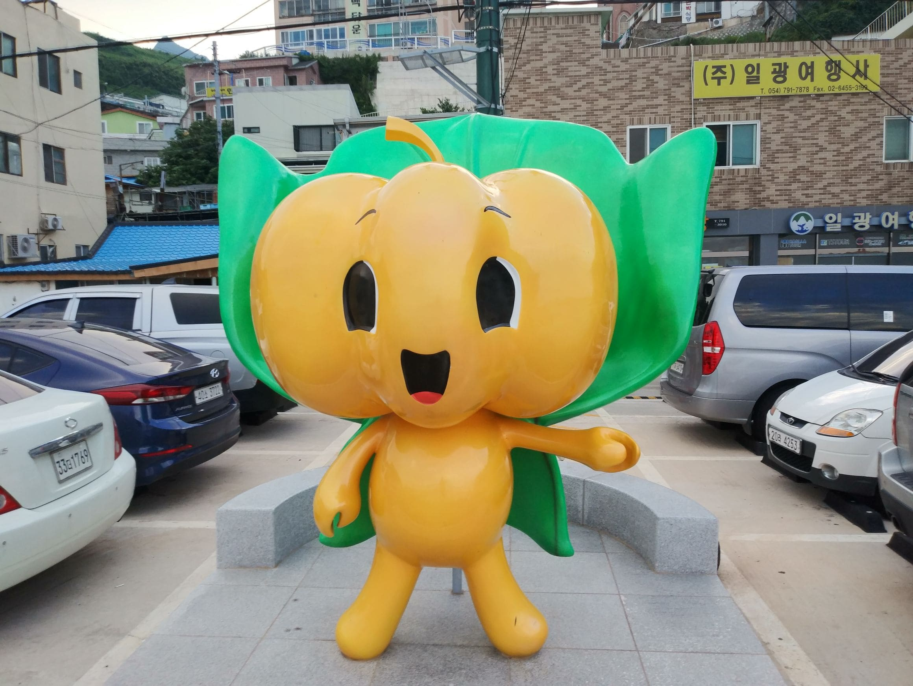
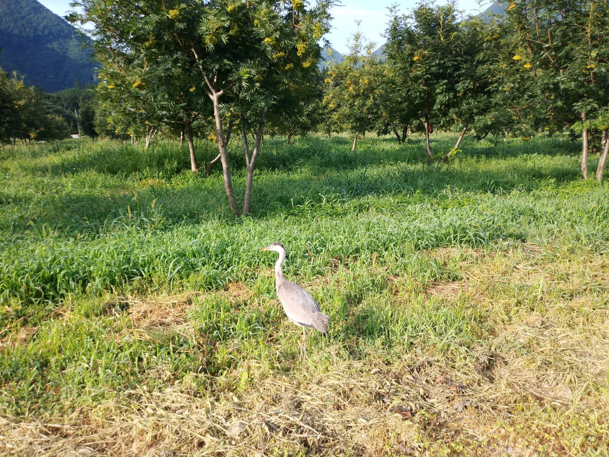
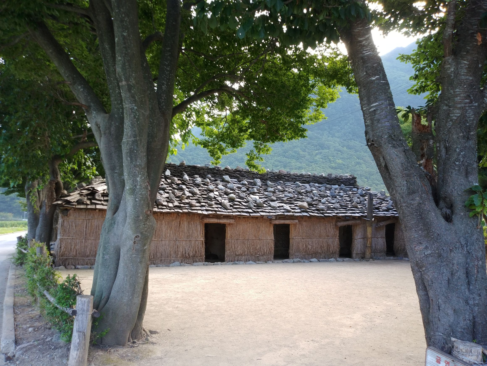

울릉도 여행
일상으로 부터의 탈출일정 : 2019년 8월(8~10일)의 휴가
독도 방문하여 기념 사진도 찍고 즐거운 여행 이었다
모든 일정에 우선하여 여행 일정을 잡았고 태풍으로 인해 7일 출발이 취소되어 3박4일이 2박 3일로 변경되었다. 힘내세요.첫번째 일정
출발전 포항여객터미널에서 출발하여 3시간정도 지나 도동항에 도착하여 렌터카로 숙소에 도착하여 짐을 숙소에 풀고 렌터카를 이용하여 관음도 방문.
다음으로 울릉도 일주도로를 한바귀 돌고 수산센터에서 저녁으로 회를 먹고 숙소로 이동 휴식

두번째 일정
아침 일찍 점심을 싸서 성인봉을 일주 하였다 나리 분지 쪽이 아닌 사동항 방향에서 올랐다 3시간 정도 지나 아직도 멀었다고 느껴 힘들어 할적에 바로 앞에 성인봉이 나타났다 하산 하여 주차장을 바로전에 점심을 먹었다
오늘은 반대편으로 울등도를 일주하고 오후에 독도로 출발 운이 좋게 독도에 내려 30분정도 열심히 기념사진을 찍었다. 숙소에 늦게 도착하여 숙소에서 정식으로 저녁을 해결

독도
갈매기가 나르고
여행객은 사진찍기 바쁘다.
멋진 하루 기억하리라
세번째 일정
오전에 나리 분지를 보고 이동하여 모노레일을 타고 한국의 10대비경을 구경하고 나서 숙소로 이동하여 렌트카를 반납하고 도동항에서 식사를 하고 도동항 내 올레길를 한바퀴 돌고 다시 포항으로가서
차량으로 이동 집에 도착

Fun
재미롭거나 인상적인 것

오징어 조형물
울릉도 오징어를 표현하였다

호박 마스코트
울릉도 호박엿이 유명했죠

울릉도의 새
가까이 가도 날아가지 않네

너와 투막집
나리분지에서 너와 투막집
Gallery
2박 3일로 일정이 줄었지만 조금 일찍 움직여 여유롭게 여행을 즐겼다. 독도에서는 열기에 휩싸여 많은 사진을 찍었다
First Day

관음도에서 본 전경
일, 이, 삼선암 (일이선암은 옆으로 겹처 잘 안보임)
관음도에서 본 전경
전경
관음도에서 본 전경
관음도로 진입하는 다리가 보인다 (입장료가 조금 비쌈)
저동항
야간 전경
Second Day

성인봉
성인봉에서 본 전경
성인봉
성인봉 올가가는 도중 맞은편 전경
일주중 전경
올라 가는 계단이 보인다 (밭 농사용 인듯)
일주중 전경
경치가 좋아 1박2일 이 다녀간곳
독도에서
바위가 멋 있다 가운데 촛대바위가 보인다
독도에서
바위가 세월의 흔적이 담겨 있다
독도에서
수비대로 올라가는 계단이 보인다
독도에서
수비대로 올라가는 계단이 보인다
독도에서
바위가 세월의 흔적이 담겨 있다
Third Day

나리분지
우측에 알봉이 보인다
나리분지
나리분지 설명판
나리분지
투막집 부엌 내부
나리분지
억새투막집
일주도로
코끼리 바위와 송곳바위가 보인다
한국의 10대비경
해안가 절경이 보인다(모노레일 타고 구경할수 있다)
모노레일 주변
멀리 모노레일 정거장이 보인다
도동항
도동한 전경
도동항
올레길중 굴사이에서 본 전경
도동항
절경이다 (올레길중)